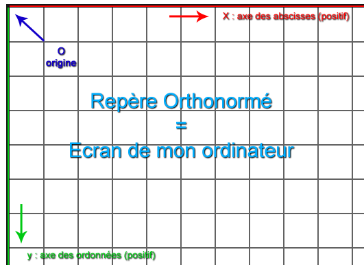

Dans un repère, notre écran...

Scale ou Echelle
blablablablablablablablablablablablablablablablablablablablablablablabla
Scale X
Scale Y
Scale
Skew ou Incliner
blablablablablablablablablablablablablablablablablablablablablablablabla
Skew X
Skew Y
Skew